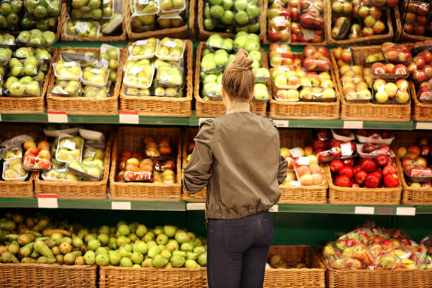

Onde o urbano se alimenta do rural
Na última etapa, celebramos a chegada dos frutos do campo na cidade. A chegada de alimentos à cidade é essencial para garantir a segurança alimentar da população urbana. Como a maior parte dos alimentos é produzida no campo, o transporte eficiente e regular desses produtos até os centros urbanos assegura o abastecimento, a variedade e a qualidade da alimentação nas cidades. Essa logística também influencia os preços e o acesso da população a alimentos frescos e saudáveis. Além disso, valorizar essa cadeia fortalece a economia local, gera empregos e promove a integração entre campo e cidade, tornando o sistema alimentar mais sustentável e equilibrado.
